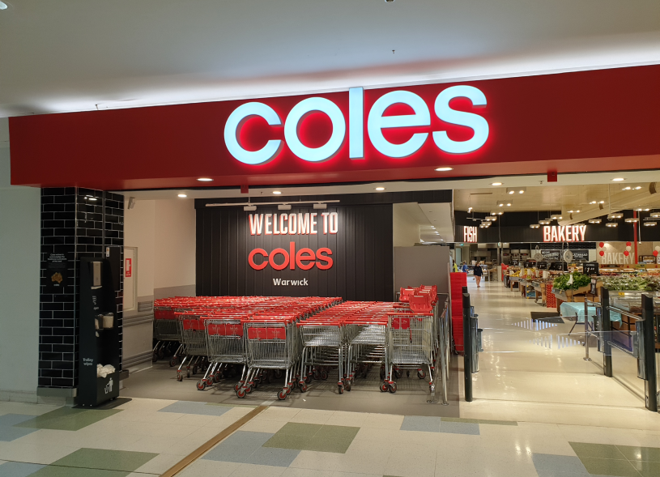
Going Shopping
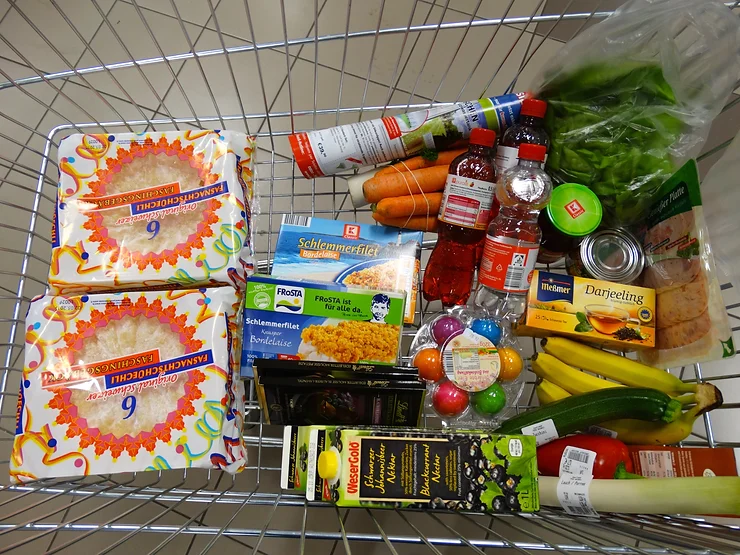
Time to Go Home
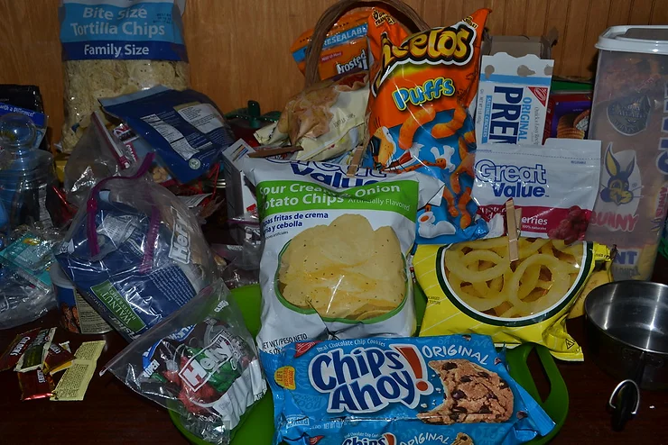
Feeling Hungry
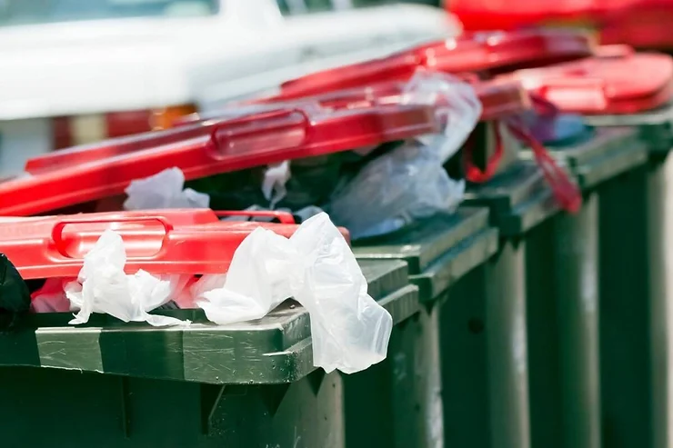
Bins are Full
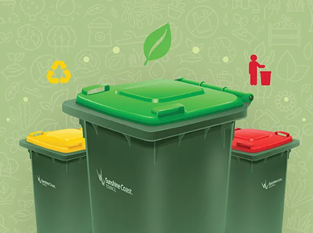
Into the Wrong Bin
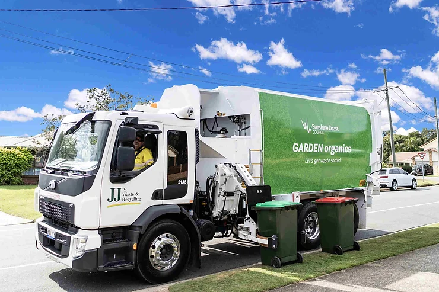
Away it Goes
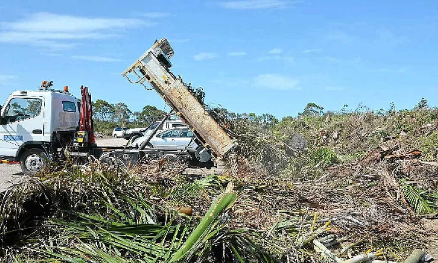
Getting Rid of It

The Problem
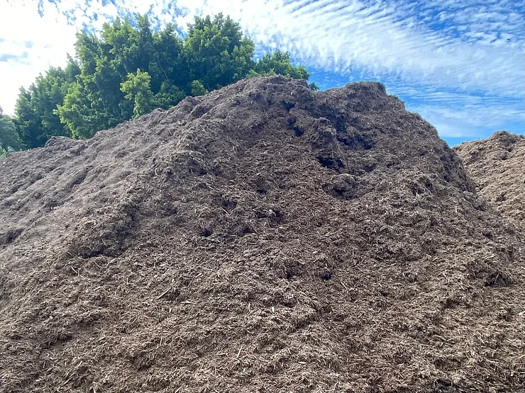
Eventually Turns into Mulch
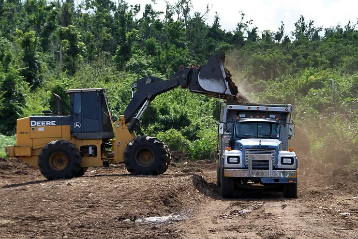
Loaded into a Truck
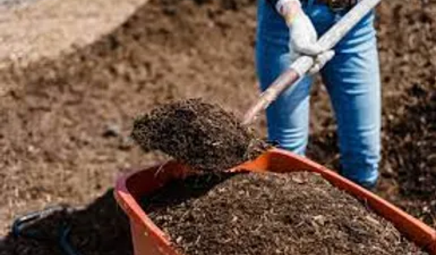
And Distributed
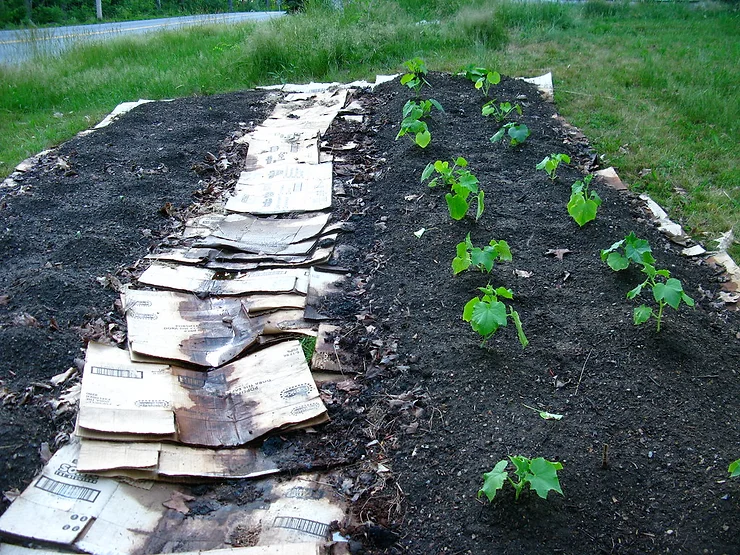
Into Our Gardens
References:
Billhoffman. “No Need for Bin, Council Has Efficient Green Waste-To-Mulch.” Couriermail, The Courier Mail, 23 Sept. 2013, www.couriermail.com.au/news/queensland/sunshine-coast/no-need-for-bin-council-has-efficient-green-wastetomulch/news-story/ea51ca44cb40e54a15a2fa2a24b1042f. Accessed 13 Aug. 2024.
CC0-Photographers. “Free Images : Food, Art, Supermarket, Grocery Store, Retail, Shopping Cart 5184x3888.” Pxhere.com, 2017, pxhere.com/en/photo/908138. Accessed 13 Aug. 2024.
“Contractors Load Trucks with Mulch.” Picryl, picryl.com/media/contractors-load-trucks-with-mulch-produced-from-vegetation-7feb8f. Accessed 13 Aug. 2024.
“File:Coles Warwick Entrance.jpg - Wikimedia Commons.” Wikimedia.org, 10 Feb. 2020, commons.wikimedia.org/wiki/File:Coles_Warwick_entrance.jpg. Accessed 13 Aug. 2024.
“Garden Organics Bins Roll out from July 2022 | Sunshine Coast Council.” Sunshine Coast Council, 10 Feb. 2022, www.sunshinecoast.qld.gov.au/news/garden-organics-bins-roll-out-from-july-2022. Accessed 13 Aug. 2024.
Hoffman, Greta. “Brown Soil in Orange Bucket.” Pexel, www.pexels.com/photo/brown-soil-in-orange-plastic-bucket-7728736/. Accessed 13 Aug. 2024.
loonyhiker. “Junk Food 127.” Flickr, 6 May 2012, www.flickr.com/photos/loonyhiker/7004285876. Accessed 13 Aug. 2024.
Ryan. “Beginning Sheet Mulch Garden.” Flickr, 8 Sept. 2010, www.flickr.com/photos/rcferdin/4970738165. Accessed 13 Aug. 2024.
Sunshine Coast Council. Facebook.com, 8 Sept. 2023, www.facebook.com/photo.php?fbid=720967660074865&id=100064849114974&set=a.148728537298783&locale=lt_LT. Accessed 13 Aug. 2024.
Sunshine Coast News. “Cleaner and Greener: Service Puts Coast on Road to Net Zero.” Sunshine Coast News, 16 July 2022, www.sunshinecoastnews.com.au/2022/07/17/sunshine-coast-waste-collection/. Accessed 13 Aug. 2024.
Billhoffman. “No Need for Bin, Council Has Efficient Green Waste-To-Mulch.” Couriermail, The Courier Mail, 23 Sept. 2013, www.couriermail.com.au/news/queensland/sunshine-coast/no-need-for-bin-council-has-efficient-green-wastetomulch/news-story/ea51ca44cb40e54a15a2fa2a24b1042f. Accessed 13 Aug. 2024.
CC0-Photographers. “Free Images : Food, Art, Supermarket, Grocery Store, Retail, Shopping Cart 5184x3888.” Pxhere.com, 2017, pxhere.com/en/photo/908138. Accessed 13 Aug. 2024.
“Contractors Load Trucks with Mulch.” Picryl, picryl.com/media/contractors-load-trucks-with-mulch-produced-from-vegetation-7feb8f. Accessed 13 Aug. 2024.
“File:Coles Warwick Entrance.jpg - Wikimedia Commons.” Wikimedia.org, 10 Feb. 2020, commons.wikimedia.org/wiki/File:Coles_Warwick_entrance.jpg. Accessed 13 Aug. 2024.
“Garden Organics Bins Roll out from July 2022 | Sunshine Coast Council.” Sunshine Coast Council, 10 Feb. 2022, www.sunshinecoast.qld.gov.au/news/garden-organics-bins-roll-out-from-july-2022. Accessed 13 Aug. 2024.
Hoffman, Greta. “Brown Soil in Orange Bucket.” Pexel, www.pexels.com/photo/brown-soil-in-orange-plastic-bucket-7728736/. Accessed 13 Aug. 2024.
loonyhiker. “Junk Food 127.” Flickr, 6 May 2012, www.flickr.com/photos/loonyhiker/7004285876. Accessed 13 Aug. 2024.
Ryan. “Beginning Sheet Mulch Garden.” Flickr, 8 Sept. 2010, www.flickr.com/photos/rcferdin/4970738165. Accessed 13 Aug. 2024.
Sunshine Coast Council. Facebook.com, 8 Sept. 2023, www.facebook.com/photo.php?fbid=720967660074865&id=100064849114974&set=a.148728537298783&locale=lt_LT. Accessed 13 Aug. 2024.
Sunshine Coast News. “Cleaner and Greener: Service Puts Coast on Road to Net Zero.” Sunshine Coast News, 16 July 2022, www.sunshinecoastnews.com.au/2022/07/17/sunshine-coast-waste-collection/. Accessed 13 Aug. 2024.